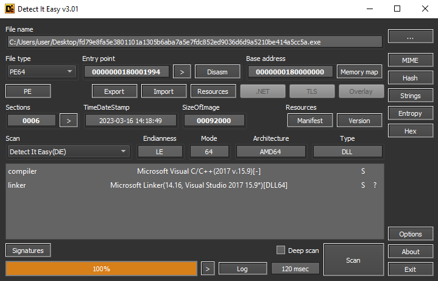
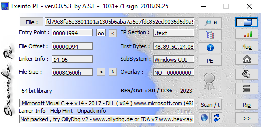

Introduction
This post serves as a first installment of my personal reverse engineering portfolio aiming to demonstrate my technical capabilities. Topics that will be covered focus on reverse engineering, detection engineering and threat hunting. The goal is to cover 4-5 different malware families and document the process of analyzing, reverse engineering and documenting the functionality of each unique sample.
Getting Started - Obtaining a sample
For this first post, we will be focussing on the Emotet banking trojan malware family. Websites like VirusTotal and Abuse.ch offer databases containing thousands to millions of malware samples that are uploaded by users from different backgrounds and occuptations. Since a paid license is required for VirusTotal, we will be using the MalwareBazaar Database from Abuse.ch. By utilizing the search syntax, we can search for signatures containing the keyword "Emotet": signature:Emotet. A total of 96 samples will be found, and after some cross-checking and referencing, we will choose the sample with SHA256 hash: fd79e8fa5e3801101a1305b6aba7a5e7fdc852ed9036d6d9a5210be414a5cc5a. Each sample will be provided in a password-protected zip file, which should be a given within the malware community: infected.
Static Properties Analysis
Before diving into a debugger, we want to identify and analyse the static properties of the malware. In cases where initial triage and analysis is performed,
one needs to verify in the first instance, if the file under analysis is actually malware. In the case of the emotet sample, we will focus on potential packer
identification, embedded resources, imports and exports, and any other interesting artifacts.
To perform this initial analysis, we will use PEStudio, which is a Windows executable file analysis tool, which
we utilize to gain answers to most of the focus areas mentioned previously. Whilst utilizing PEStudio there are several things you would want to have a look at
in order to determine what kind of application/executable you are dealing with. The first thing that can be noticed, is the "indicators" section which contains
highlighted sections of the executable that are considered potentially malicious or suspicious. You will notice that the highest rated indicators revolve around
suspicious strings and functions as well as a suspicious timestamp and a seemingly invalid checksum.
If we first concentrate on the strings, we can observe that PEStudio identified 23791 strings, or at least, letters that it determined could be a string. Filter
the strings view by "blacklist" and we identify that the blacklisted strings are all functions. Some of them can be used in generic cases and by themselves are
not by default malicious, like SetEnvironmentVariable and TerminateProcess. Moving on to the "functions"
view, we can conlude that the blacklisted strings are also the blacklisted functions that are imported from kernel32.dll and
ntdll.dll
Malware often uses packers to simultaneously obfuscate the code and encrypt the executable. This hinders initial analysis as a reverse engineer is forced to invest
additional time in understanding which packer was used and how the executable can be unpacked. One of the most "famous" packers is UPX, which is used, amongst others
by AgentTesla, Gh0stRAT and Redline malware.
We can identify potential usage of packers through using Detect-It-Easy and ExeInfo PE. Since a
variety of packers exist, we can ultimately never rely on one single tool. Let's first look at Detect-It-Easy (DIE).
DIE is capable of detecting a multitude of packing mechanisms using a signature-based approach. DIE does not detect any packers used by the executable. We can identify that
DIE states that the Microsoft Visual C/C++ 2017 compiler was used and the Microsoft Linker version 14.16.
We can verify these findings by loading the executable into ExeInfo PE and scanning the executable. Here, we can conclude that no packers are present, as ExeInfo PE detects
the same results as DIE.


Static Analysis
With the first analysis, focussing on the static properties, concluded, let's load the binary into a disassembler and figure out what it is doing.